คู่มือการใช้งาน · งวดที่ 4 จาก 6
ระบบบริหารทรัพยากรบุคคล (HR)
กลุ่มกำกับดูแลและวินัย
- ระบบประเมินผล KPITOR ข้อ 3.12
- ระบบตักเตือนพนักงานเรื่องระเบียบสัญญาข้อ 7.1 งวดที่ 4
- ระบบรายงานปัญหาและการแก้ไขข้อมูลTOR ข้อ 3.6
- สัญญาเลขที่
- 002/2569 (ลงวันที่ 4 กันยายน 2569)
- ผู้ว่าจ้าง
- สหกรณ์การเกษตรเพื่อการตลาดลูกค้า ธ.ก.ส.สุรินทร์ จำกัด
- ชื่อแอป
- AMC สกต.สุรินทร์
- ภาพประกอบ
- ถ่ายจากระบบทดสอบ (staging) ด้วยข้อมูลทดสอบ เมื่อวันที่ 17–18 พฤศจิกายน 2569 (หมวดวินัยถ่ายใหม่ตามระบบเวอร์ชันล่าสุด)
สารบัญ
| ระบบประเมินผล KPIอ้างอิง TOR ข้อ 3.12 |
| ภาพรวมการประเมินประจำปี | 3 |
| บันทึกคะแนนรายบุคคล | 4 |
| สรุปผลการประเมินทั้งปี | 5 |
| ตรวจสอบและอนุมัติผลการประเมิน | 6 |
| KPI ระดับสาขา / ฝ่าย | 7 |
| ผลประกอบการของสหกรณ์ | 8 |
| แบบประเมินรายเดือน 12 รายการ | 9 |
| ผลการประเมินของฉัน (พนักงาน) | 10 |
| ระบบตักเตือนพนักงานเรื่องระเบียบอ้างอิง สัญญาข้อ 7.1 งวดที่ 4 |
| รายการเรื่องร้องเรียนและการตักเตือน | 11 |
| พิจารณาเรื่องและออกหนังสือตักเตือน | 12 |
| ข้อระเบียบ พยาน และหมายเหตุในหนังสือ | 13 |
| ฝ่ายบุคคลจัดทำหนังสือรายงานผู้จัดการ | 14 |
| ผู้ช่วยผู้จัดการตรวจสอบและส่งต่อผู้จัดการ | 15 |
| ผู้จัดการ: บันทึกวินัยและโทษทางวินัย (1/4) | 16 |
| ฟอร์มบันทึกวินัย: ข้อระเบียบและการสอบสวน (2/4) | 17 |
| ฟอร์มบันทึกวินัย: ผลการสอบสวนและมติ/คำสั่ง (3/4) | 18 |
| ฟอร์มบันทึกวินัย: เลือกโทษและช่องเพิ่มของแต่ละโทษ (4/4) | 19 |
| ส่วนการแจ้งผลและเอกสารแนบ แล้วบันทึกและปิดเรื่อง | 20 |
| เรื่องที่ปิดแล้วและบันทึกวินัย | 21 |
| แจ้งผลและบันทึกอุทธรณ์ | 22 |
| แจ้งเรื่องการกระทำผิดระเบียบ (พนักงาน) | 23 |
| ติดตามเรื่องที่ฉันแจ้ง และประวัติการตักเตือน | 24 |
| ตั้งค่าวินัย: หัวข้อระเบียบและเกณฑ์ | 25 |
| ข้อระเบียบ: รายการข้อที่หนังสือและบันทึกวินัยอ้างถึง | 26 |
| ตั้งข้อระเบียบเริ่มต้นของหัวข้อ | 27 |
| เพิ่ม / แก้ไขหัวข้อระเบียบ | 28 |
| ระบบรายงานปัญหาและการแก้ไขข้อมูลอ้างอิง TOR ข้อ 3.6 |
| จุดเริ่มต้นแจ้งแก้ไขข้อมูลและคำร้องของฉัน (พนักงาน) | 29 |
| กรอกแบบฟอร์ม "แจ้งแก้ไขข้อมูล" | 30 |
| ตัวอย่างการกรอกและส่งคำร้อง | 31 |
| รายการคำร้องของฝ่ายบุคคล | 32 |
| อนุมัติหรือปฏิเสธคำร้อง | 33 |
| กฎความโปร่งใส และการดูคำร้องที่พิจารณาแล้ว | 34 |
| สถิติคำร้อง | 35 |
วิธีอ่านภาพ กรอบแดงและวงกลมเลขแดงในภาพคือจุดที่อธิบาย เลขในวงกลมตรงกับรายการหมายเลขใต้ภาพ
ระบบประเมินผล KPIอ้างอิง TOR ข้อ 3.12
1
ภาพรวมการประเมินประจำปี
ผู้ใช้: ฝ่ายบุคคล · ผู้จัดการ · ผช.ผจก. (ตามสิทธิ์ของแต่ละแท็บ)
เมนู: ภาพรวมงานบุคคล → เงินเดือนและสวัสดิการ → KPI
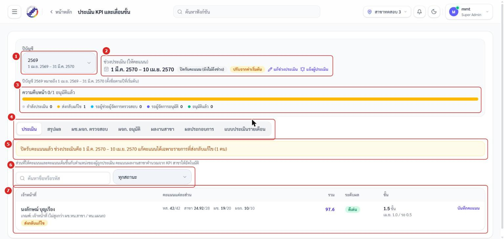
- 1ปีบัญชี — เลือกปีที่ต้องการดู ปีบัญชีตั้งชื่อตามปีที่เริ่มต้น เช่น 2569 = 1 เม.ย. 2569 – 31 มี.ค. 2570
- 2ช่วงประเมิน (ให้คะแนน) พร้อมสถานะของช่วง (เช่น "ปิดรับคะแนน (ยังไม่ถึงช่วง)") และลิงก์ "แก้ช่วงประเมิน" / "แจ้งผู้ประเมิน"
- 3ความคืบหน้า — แถบรวมและจำนวนรายการในแต่ละสถานะ: กำลังประเมิน · ส่งกลับแก้ไข · รอ ผช.ผจก.ตรวจสอบ · รอผู้จัดการอนุมัติ · อนุมัติแล้ว
- 4แท็บการทำงาน 7 แท็บ — ประเมิน · สรุปผล · ผช.ผจก. ตรวจสอบ · ผจก. อนุมัติ · ผลงานสาขา · ผลประกอบการ · แบบประเมินรายเดือน
- 5แถบแจ้งสถานะช่วงประเมิน — เมื่อปิดรับคะแนนแล้ว จะแก้คะแนนได้เฉพาะรายการที่ส่งกลับแก้ไข
- 6ค้นหา / กรองสถานะ — ค้นด้วยชื่อหรือรหัสเจ้าหน้าที่
- 7ตารางรายชื่อ — คะแนนแต่ละส่วน (หส. / สาขา / ผช. / ผจก.) คะแนนรวม ระดับผล จำนวนขั้นที่ได้ และปุ่ม "บันทึกคะแนน"
ส่วนที่ให้คะแนนและคะแนนเต็มขึ้นอยู่กับตำแหน่งของผู้ถูกประเมิน ส่วน "ผลงานสาขา" ระบบคำนวณให้อัตโนมัติจาก KPI ของสาขา
ระบบประเมินผล KPIอ้างอิง TOR ข้อ 3.12
2
บันทึกคะแนนรายบุคคล
ผู้ใช้: หัวหน้าสาขา · ผช.ผจก. · ผจก. · คณะกรรมการ (ตามส่วนที่รับผิดชอบ)
เมนู: KPI → แท็บ ประเมิน → ปุ่ม บันทึกคะแนน
หน้าต่าง "บันทึกคะแนน KPI" — แท็บ รายส่วน
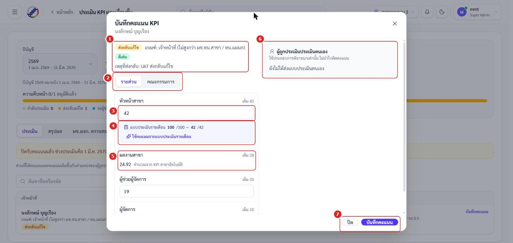
- 1สถานะและเกณฑ์ — แสดงสถานะ (ที่นี่คือ "ส่งกลับแก้ไข") เกณฑ์การประเมินตามตำแหน่ง ระดับผล และเหตุผลที่ส่งกลับ
- 2สลับแท็บ "รายส่วน" (ผู้ประเมินแต่ละระดับกรอกส่วนของตน) หรือ "คณะกรรมการ"
- 3ช่องคะแนนของหัวหน้าสาขา (เต็ม 42)
- 4คะแนนจากแบบประเมินรายเดือน — แสดงผลรวมจากแบบ 12 รายการ และปุ่ม "ใช้คะแนนจากแบบประเมินรายเดือน" เพื่อนำค่ามาใส่ให้
- 5ผลงานสาขา (เต็ม 28) — ระบบคำนวณจาก KPI สาขา กรอกเองไม่ได้
- 6แบบประเมินตนเอง ของผู้ถูกประเมิน — ใช้ประกอบการพิจารณาเท่านั้น ไม่นำไปคิดคะแนน
- 7ปุ่มปิด / บันทึกคะแนน
แท็บ "คณะกรรมการ"
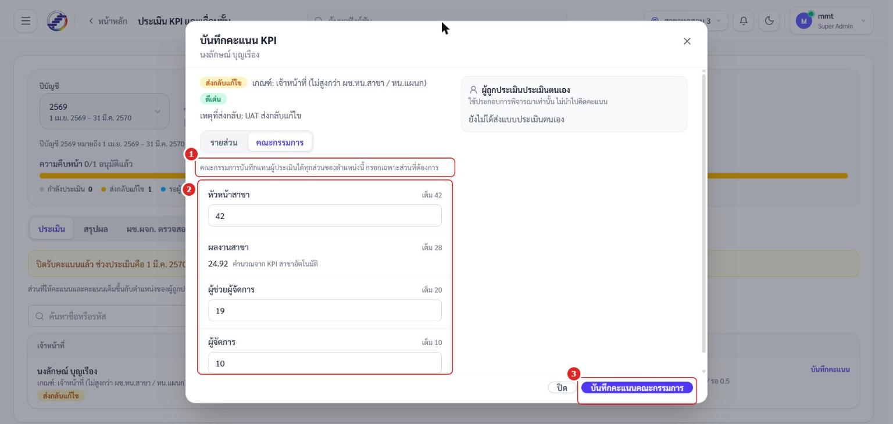
- 1คณะกรรมการบันทึกแทนผู้ประเมินได้ทุกส่วนของตำแหน่งนี้ กรอกเฉพาะส่วนที่ต้องการ
- 2ช่องคะแนนของแต่ละส่วน (หัวหน้าสาขา · ผลงานสาขา · ผช.ผจก. · ผจก.)
- 3บันทึกคะแนนคณะกรรมการ
เมื่อปิดรับคะแนนแล้ว ช่องบันทึกจะใช้ได้เฉพาะรายการที่ถูกส่งกลับแก้ไข
ระบบประเมินผล KPIอ้างอิง TOR ข้อ 3.12
3
สรุปผลการประเมินทั้งปี
ผู้ใช้: ฝ่ายบุคคล
เมนู: KPI → แท็บ สรุปผล
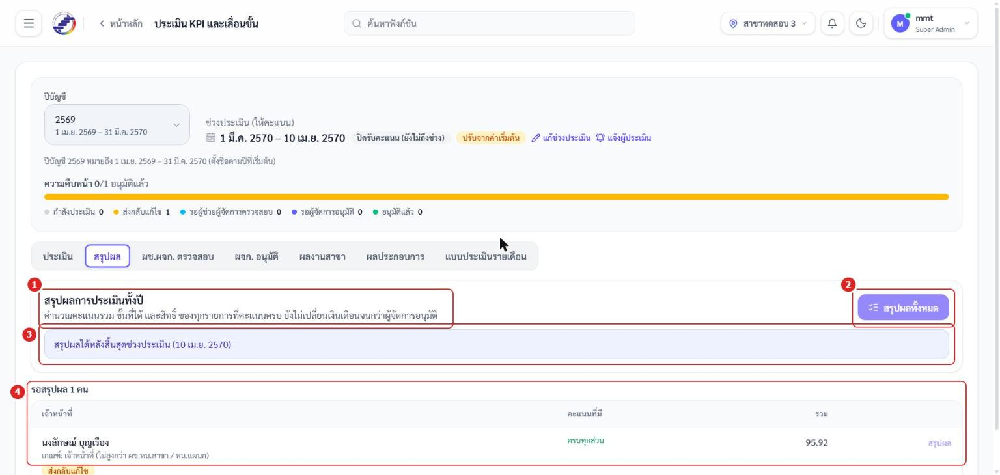
- 1สรุปผลการประเมินทั้งปี — คำนวณคะแนนรวม ขั้นที่ได้ และสิทธิ์ของทุกรายการที่คะแนนครบ ยังไม่เปลี่ยนเงินเดือนจนกว่าผู้จัดการอนุมัติ
- 2ปุ่มสรุปผลทั้งหมด — ใช้ได้หลังสิ้นสุดช่วงประเมิน
- 3ข้อความเงื่อนไข — "สรุปผลได้หลังสิ้นสุดช่วงประเมิน (10 เม.ย. 2570)"
- 4รายการรอสรุปผล — แสดงเจ้าหน้าที่ คะแนนที่มี และคะแนนรวม
หลังสรุปผล รายการจะเข้าสู่ขั้นตอน ผช.ผจก. ตรวจสอบ → ผจก. อนุมัติ ตามลำดับ
ระบบประเมินผล KPIอ้างอิง TOR ข้อ 3.12
4
ตรวจสอบและอนุมัติผลการประเมิน
ผู้ใช้: ผู้ช่วยผู้จัดการ (ตรวจสอบ) · ผู้จัดการ (อนุมัติ)
เมนู: KPI → แท็บ ผช.ผจก. ตรวจสอบ / ผจก. อนุมัติ
แท็บ "ผช.ผจก. ตรวจสอบ"
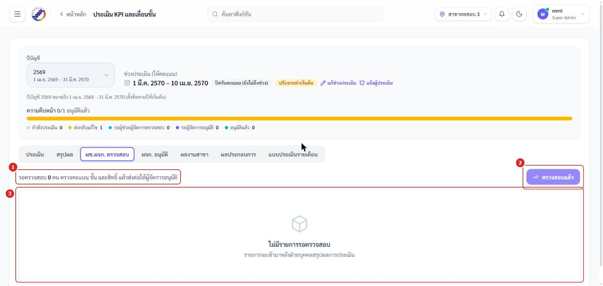
- 1ตรวจคะแนน ขั้น และสิทธิ์ แล้วส่งต่อให้ผู้จัดการอนุมัติ
- 2ตรวจสอบแล้ว — ส่งรายการที่ตรวจเสร็จต่อให้ผู้จัดการ
- 3ถ้าไม่มีรายการ จะขึ้น "ไม่มีรายการรอตรวจสอบ" (รายการเข้ามาหลังฝ่ายบุคคลสรุปผล)
แท็บ "ผจก. อนุมัติ"
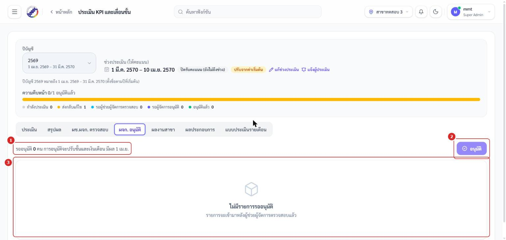
- 1ข้อความสรุปจำนวนรออนุมัติ — การอนุมัติจะปรับขั้นและเงินเดือน มีผล 1 เม.ย.
- 2อนุมัติ
- 3ถ้าไม่มีรายการ จะขึ้น "ไม่มีรายการรออนุมัติ" (รายการเข้ามาหลัง ผช.ผจก. ตรวจสอบแล้ว)
ภาพทั้งสองเป็นสถานะ "ไม่มีรายการ" บน staging เพราะรายการเดียวในปีบัญชี 2569 ยังอยู่ที่สถานะ "ส่งกลับแก้ไข"
ระบบประเมินผล KPIอ้างอิง TOR ข้อ 3.12
5
KPI ระดับสาขา / ฝ่าย
ผู้ใช้: ตามสิทธิ์ "บันทึก KPI สาขา" (ดูหน้า สิทธิ์ตามบทบาท)
เมนู: KPI → แท็บ ผลงานสาขา
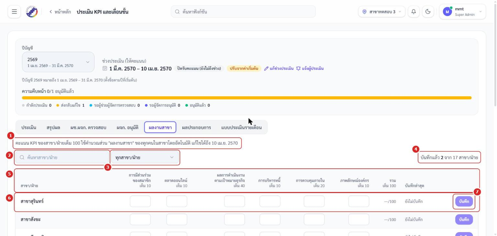
- 1คำอธิบาย — คะแนน KPI ของสาขา/ฝ่ายเต็ม 100 ใช้คำนวณส่วน "ผลงานสาขา" ของทุกคนในสาขาโดยอัตโนมัติ แก้ไขได้ถึงวันสิ้นสุดช่วงประเมิน
- 2ค้นหาสาขา/ฝ่าย
- 3กรองสาขา/ฝ่าย
- 4ตัวนับ — จำนวนสาขา/ฝ่ายที่บันทึกแล้ว (ที่นี่ 2 จาก 17)
- 56 องค์ประกอบ — การมีส่วนร่วมของสมาชิก (10) · ตลาดออนไลน์ (10) · ผลการดำเนินงานตามเป้าหมายธุรกิจ (40) · การบริหารหนี้ (10) · การควบคุมภายใน (20) · ภาพลักษณ์องค์กร (10) รวมเต็ม 100
- 6แถวของแต่ละสาขา/ฝ่าย — ช่องคะแนน คะแนนรวม และเวลาบันทึกล่าสุด
- 7บันทึก — บันทึกคะแนนของสาขานั้น
คะแนนรวมของสาขาแสดงเป็น —/100 จนกว่าจะกรอกครบทั้ง 6 องค์ประกอบ
ระบบประเมินผล KPIอ้างอิง TOR ข้อ 3.12
6
ผลประกอบการของสหกรณ์
ผู้ใช้: ตามสิทธิ์ที่ระบบกำหนด
เมนู: KPI → แท็บ ผลประกอบการ
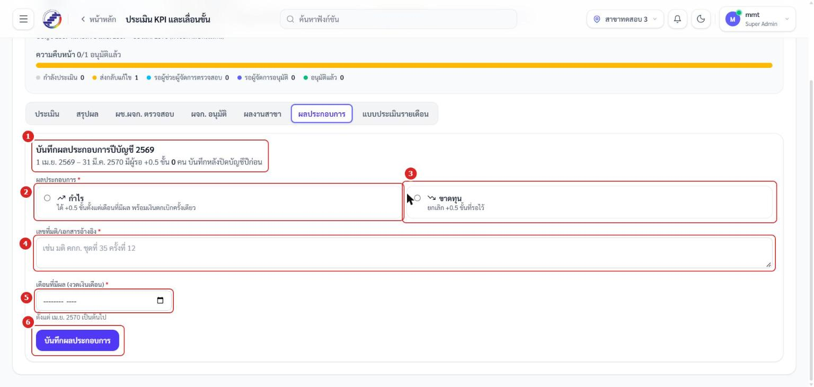
- 1หัวข้อ — บันทึกผลประกอบการของปีบัญชี พร้อมจำนวนผู้รอ +0.5 ขั้น บันทึกหลังปิดบัญชีปีก่อน
- 2กำไร — ได้ +0.5 ขั้นตั้งแต่เดือนที่มีผล พร้อมเงินตกเบิกครั้งเดียว
- 3ขาดทุน — ยกเลิก +0.5 ขั้นที่รอไว้
- 4เลขที่มติ/เอกสารอ้างอิง (บังคับ)
- 5เดือนที่มีผล (งวดเงินเดือน) (บังคับ) — ตั้งแต่ เม.ย. ของปีถัดไปเป็นต้นไป
- 6บันทึกผลประกอบการ
ภาพนี้ยังไม่ได้กดบันทึก เพราะการบันทึกมีผลต่อขั้นและเงินเดือนของทุกคนในปีบัญชี
ระบบประเมินผล KPIอ้างอิง TOR ข้อ 3.12
7
แบบประเมินรายเดือน 12 รายการ
ผู้ใช้: ฝ่ายบุคคล · หัวหน้าสาขา/ฝ่าย (เฉพาะพนักงานในสาขาตน)
เมนู: KPI → แท็บ แบบประเมินรายเดือน
ส่วนบน — เลือกเจ้าหน้าที่และดูสรุป
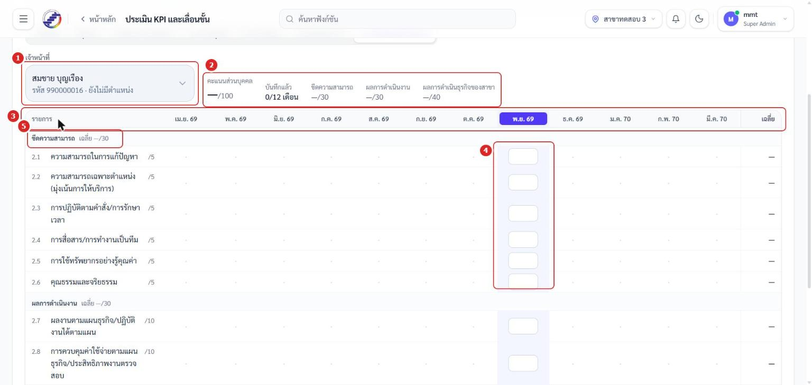
- 1เจ้าหน้าที่ — เลือกจากรายการ (ค้นหาด้วยชื่อ รหัส หรือตำแหน่งได้)
- 2สรุปคะแนน — คะแนนส่วนบุคคล (เต็ม 100) จำนวนเดือนที่บันทึกแล้ว ชี้ความสามารถ (30) ผลการดำเนินงาน (30) ผลการดำเนินธุรกิจของสาขา (40)
- 3หัวคอลัมน์เดือน เม.ย.–มี.ค. และ "เฉลี่ย" — เดือนปัจจุบันถูกไฮไลต์
- 4คอลัมน์เดือนที่กรอก — ช่องคะแนนของแต่ละรายการ
- 5กลุ่มรายการ "ชี้ความสามารถ" ข้อ 2.1–2.6 (ข้อละ 5 คะแนน)
ส่วนล่าง — รายการที่เหลือและปุ่มบันทึก
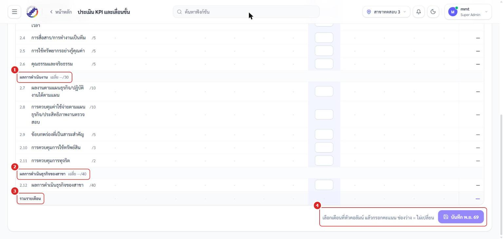
- 1กลุ่ม "ผลการดำเนินงาน" ข้อ 2.7–2.11 (10 · 10 · 5 · 3 · 2)
- 2กลุ่ม "ผลการดำเนินธุรกิจของสาขา" ข้อ 2.12 (เต็ม 40)
- 3รวมรายเดือน
- 4บันทึกเดือน — เลือกเดือนที่หัวคอลัมน์ แล้วกรอกคะแนน ช่องว่าง = ไม่เปลี่ยน
คะแนนเฉลี่ยของแต่ละรายการรวมเป็นคะแนนส่วนบุคคล (เต็ม 100) แล้วนำไปใช้ในหน้าต่าง "บันทึกคะแนน KPI" ได้
ระบบประเมินผล KPIอ้างอิง TOR ข้อ 3.12
8
ผลการประเมินของฉัน (พนักงาน)
ผู้ใช้: พนักงานทุกคน
เมนู: หน้าหลัก → ผลการประเมินของฉัน
ปีบัญชี 2568 (ช่วงประเมินปิดแล้ว)
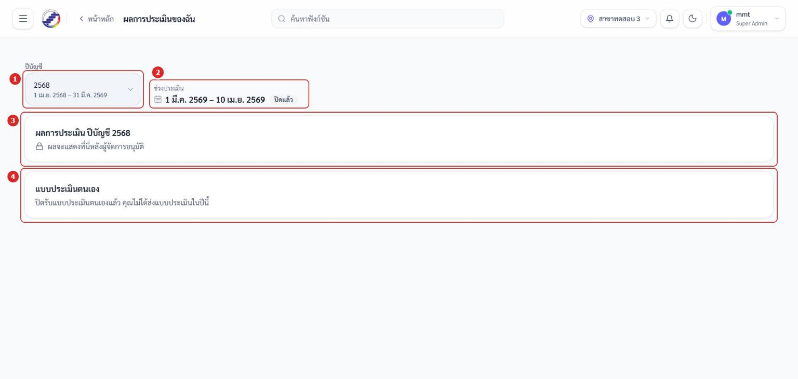
- 1ปีบัญชี — เลือกดูย้อนหลังได้
- 2ช่วงประเมิน พร้อมสถานะ (ปิดแล้ว)
- 3ผลการประเมิน — ผลจะแสดงที่นี่หลังผู้จัดการอนุมัติ (ก่อนนั้นมีไอคอนกุญแจ)
- 4แบบประเมินตนเอง — ปิดรับแล้ว คุณไม่ได้ส่งแบบประเมินในปีนี้
ปีบัญชี 2569 (ยังไม่เปิดช่วงประเมิน)
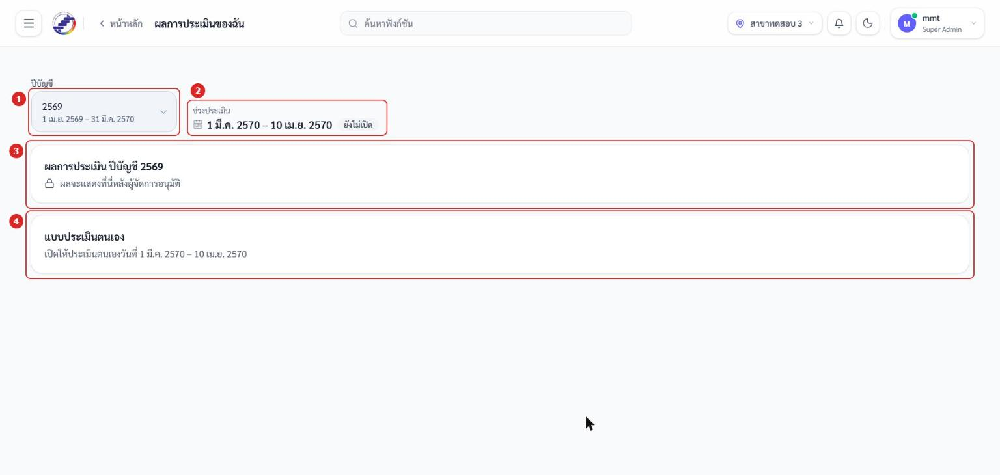
- 1เลือกปีบัญชี 2569
- 2ช่วงประเมิน 1 มี.ค. – 10 เม.ย. 2570 สถานะ "ยังไม่เปิด"
- 3ผลการประเมินยังล็อกอยู่
- 4แบบประเมินตนเอง — บอกวันที่เปิดให้ประเมินตนเอง
แบบประเมินตนเองของพนักงานใช้ประกอบการพิจารณาของผู้ประเมินเท่านั้น ไม่ถูกนำไปคิดเป็นคะแนน
ระบบตักเตือนพนักงานเรื่องระเบียบอ้างอิง สัญญาข้อ 7.1 งวดที่ 4
1
รายการเรื่องร้องเรียนและการตักเตือน
ผู้ใช้: ผู้จัดการ · ผช.ผจก. · ฝ่ายบุคคล · หัวหน้าสาขา/ฝ่าย (เห็นเฉพาะเรื่องของตน)
เมนู: ภาพรวมงานบุคคล → วินัย → เรื่องร้องเรียน/ตักเตือน
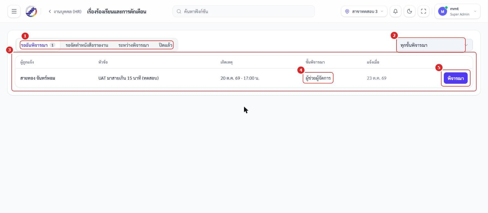
- 1แท็บสถานะ 4 แท็บ — รอฉันพิจารณา · รอจัดทำหนังสือรายงาน (ขั้นของฝ่ายบุคคล) · ระหว่างพิจารณา · ปิดแล้ว
- 2กรองตามขั้นพิจารณา — หัวหน้าสาขา/แผนก · ฝ่ายบุคคล (จัดทำหนังสือรายงาน) · ผู้ช่วยผู้จัดการ · ผู้จัดการ
- 3ตารางเรื่อง — ผู้ถูกแจ้ง หัวข้อ วันเวลาเกิดเหตุ ขั้นพิจารณา และวันที่แจ้ง
- 4ขั้นพิจารณา ปัจจุบันของเรื่องนั้น (เช่น ผู้ช่วยผู้จัดการ)
- 5พิจารณา — เปิดหน้าต่างรายละเอียดของเรื่อง
เรื่องร้ายแรง หรือเรื่องที่ตักเตือนครบแล้วยังฝ่าฝืน จะเริ่มที่ขั้น "ฝ่ายบุคคล" ก่อน (ไม่ไปที่ ผช.ผจก. โดยตรงเหมือนเดิม) ผู้ใช้แต่ละคนเห็นเฉพาะเรื่องในอำนาจหรือในสายงานของตน
ระบบตักเตือนพนักงานเรื่องระเบียบอ้างอิง สัญญาข้อ 7.1 งวดที่ 4
2
พิจารณาเรื่องและออกหนังสือตักเตือน
ผู้ใช้: ผู้มีอำนาจตามขั้น (หัวหน้า · ผช.ผจก. · ผจก.)
เมนู: เรื่องร้องเรียน/ตักเตือน → แท็บ รอฉันพิจารณา → ปุ่ม พิจารณา
รายละเอียดเรื่องและลำดับขั้นโทษ
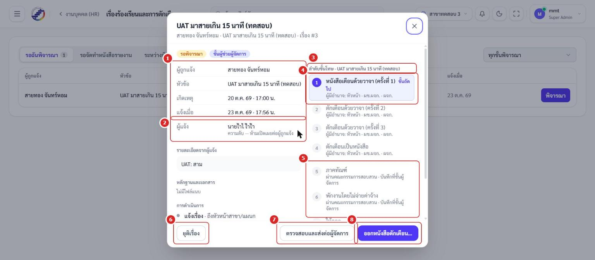
- 1ข้อมูลเรื่อง — ผู้ถูกแจ้ง หัวข้อ เวลาเกิดเหตุ เวลาแจ้ง
- 2ผู้แจ้ง — ผู้มีสิทธิ์เห็นจะเห็นชื่อ พร้อมข้อความ "ความลับ — ห้ามเปิดเผยต่อผู้ถูกแจ้ง" (ฝ่ายบุคคลไม่เห็นชื่อผู้แจ้ง)
- 3ลำดับขั้นโทษ ของหัวข้อนั้น
- 4ขั้น 1–4 ระบบ "ออก" หนังสือให้ — ตักเตือนด้วยวาจา ครั้งที่ 1–3 และตักเตือนเป็นหนังสือ ขั้นที่ไฮไลต์คือขั้นที่ออกได้ครั้งนี้
- 5ขั้น 5–8 ระบบ "บันทึก" ผลเท่านั้น — ภาคทัณฑ์ · พักงานโดยไม่จ่ายค่าจ้าง · ให้ออก · ไล่ออก ต้องผ่านคณะกรรมการสอบสวนนอกระบบ แล้วบันทึกที่ขั้นผู้จัดการ
- 6ยุติเรื่อง
- 7ตรวจสอบและส่งต่อผู้จัดการ — ปุ่มของ ผช.ผจก. (ขั้นหัวหน้าจะขึ้นว่า "ส่งต่อฝ่ายบุคคล")
- 8ออกหนังสือตักเตือน... — เปิดหน้าต่างยืนยันหนังสือ
หน้าต่าง "ออกหนังสือตักเตือน" (ส่วนบน)
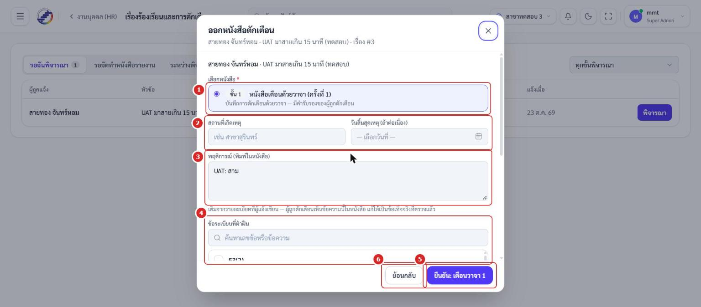
- 1เลือกหนังสือ (บังคับ) — แสดงเฉพาะขั้น 1–4
- 2สถานที่เกิดเหตุ และ วันสิ้นสุดเหตุ (ถ้าต่อเนื่อง) — ไม่บังคับ
- 3พฤติการณ์ (พิมพ์ในหนังสือ) — ดึงจากรายละเอียดที่ผู้แจ้งเขียนให้ก่อน แก้เป็นข้อเท็จจริงที่ตรวจแล้วได้
- 4ข้อระเบียบที่ฝ่าฝืน — ค้นหาแล้วติ๊กได้หลายข้อ ระบบติ๊กข้อเริ่มต้นของหัวข้อไว้ให้
- 5ยืนยัน — ปุ่มบอกหนังสือที่จะออก (เช่น "ยืนยัน: เตือนวาจา 1")
- 6ย้อนกลับ
ภาพนี้เปิดหน้าต่างเพื่อแสดงขั้นตอนเท่านั้น ไม่ได้กดยืนยัน เพื่อไม่ให้เปลี่ยนสถานะของเรื่องทดสอบ
ระบบตักเตือนพนักงานเรื่องระเบียบอ้างอิง สัญญาข้อ 7.1 งวดที่ 4
3
ข้อระเบียบ พยาน และหมายเหตุในหนังสือ
ผู้ใช้: ผู้มีอำนาจตามขั้น
เมนู: ออกหนังสือตักเตือน → เลื่อนลงส่วนล่างของหน้าต่าง
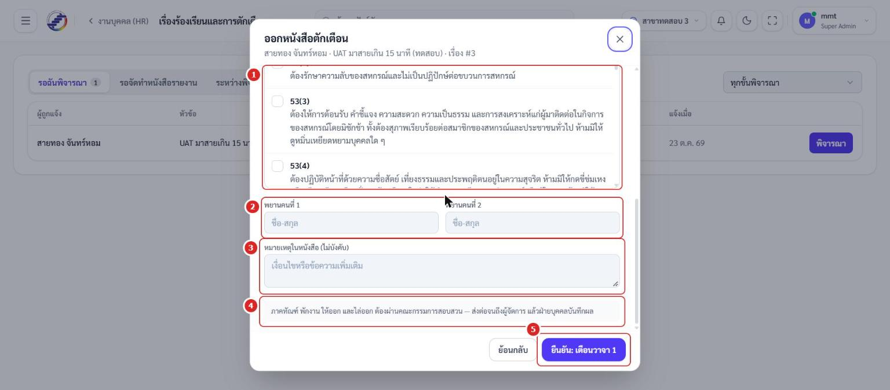
- 1รายการข้อระเบียบ (ระเบียบฯ พ.ศ. 2561) — ติ๊กข้อที่ฝ่าฝืน หนังสือจะพิมพ์ข้อเหล่านี้
- 2พยานคนที่ 1 / 2 — ไม่บังคับ ชื่อจะพิมพ์บนหนังสือ
- 3หมายเหตุในหนังสือ — ไม่บังคับ
- 4ข้อความเตือน — ภาคทัณฑ์ พักงาน ให้ออก และไล่ออก ต้องผ่านคณะกรรมการสอบสวน แล้วฝ่ายบุคคลบันทึกผล
- 5ยืนยัน — ออกหนังสือ
หนังสือเป็น PDF ตามแบบของสหกรณ์: ขั้น 1–3 = บันทึกการตักเตือนด้วยวาจา · ขั้น 4 = หนังสือตักเตือน (ระบุ "ให้โอกาสแล้ว N ครั้ง")
ระบบตักเตือนพนักงานเรื่องระเบียบอ้างอิง สัญญาข้อ 7.1 งวดที่ 4
4
ฝ่ายบุคคลจัดทำหนังสือรายงานผู้จัดการ
ผู้ใช้: ฝ่ายบุคคล (สิทธิ์บันทึกผลวินัย) — ไม่ใช่เรื่องที่ตนเป็นผู้แจ้ง
เมนู: เรื่องร้องเรียน/ตักเตือน → แท็บ รอจัดทำหนังสือรายงาน → ปุ่ม จัดทำหนังสือรายงาน
แท็บ "รอจัดทำหนังสือรายงาน"
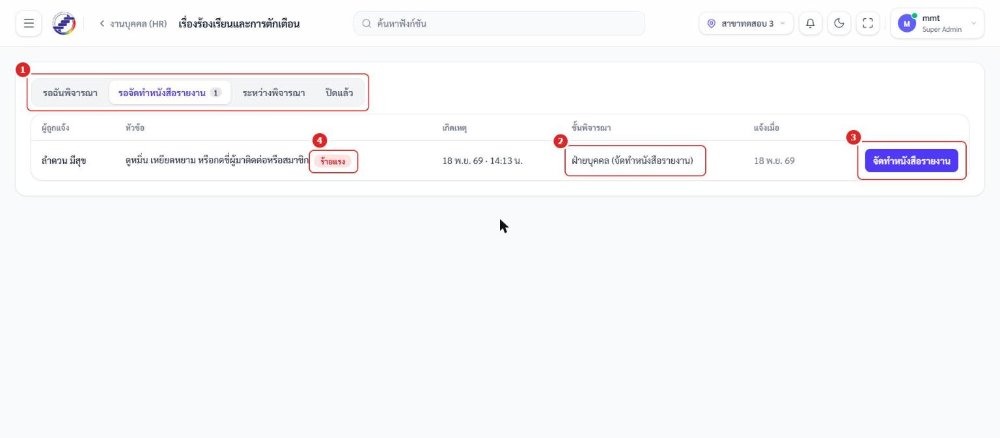
- 1แท็บ รอจัดทำหนังสือรายงาน (มีตัวเลขเมื่อมีเรื่องรอ)
- 2ขั้นพิจารณา — ฝ่ายบุคคล (จัดทำหนังสือรายงาน)
- 3จัดทำหนังสือรายงาน — เปิดหน้าต่างกรอกหนังสือ
- 4ร้ายแรง — ป้ายแสดงความผิดร้ายแรง
หน้าต่าง "จัดทำหนังสือรายงานผู้จัดการ"
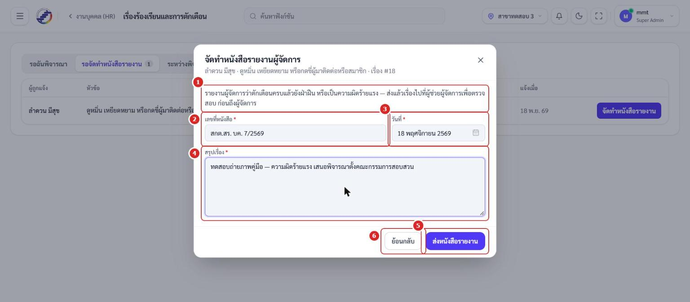
- 1คำอธิบาย — รายงานว่าตักเตือนครบแล้วยังฝ่าฝืน หรือเป็นความผิดร้ายแรง แล้วส่งต่อ ผช.ผจก. เพื่อตรวจสอบก่อนถึงผู้จัดการ
- 2เลขที่หนังสือ (บังคับ)
- 3วันที่ (บังคับ) — เลือกวันที่ในอนาคตไม่ได้
- 4สรุปเรื่อง (บังคับ)
- 5ส่งหนังสือรายงาน — เรื่องไปที่ ผช.ผจก. และผู้เกี่ยวข้องได้รับแจ้ง
- 6ย้อนกลับ
ฝ่ายบุคคลจัดทำหนังสือและบันทึกผลโดยไม่เห็นชื่อผู้แจ้ง ระบบไม่ให้จัดทำหนังสือรายงานของเรื่องที่ตนเป็นผู้แจ้งเอง
ระบบตักเตือนพนักงานเรื่องระเบียบอ้างอิง สัญญาข้อ 7.1 งวดที่ 4
5
ผู้ช่วยผู้จัดการตรวจสอบและส่งต่อผู้จัดการ
ผู้ใช้: ผู้ช่วยผู้จัดการ
เมนู: เรื่องร้องเรียน/ตักเตือน → แท็บ รอฉันพิจารณา → ปุ่ม พิจารณา → ตรวจสอบและส่งต่อผู้จัดการ
รายละเอียดเรื่องที่ขั้น ผช.ผจก.
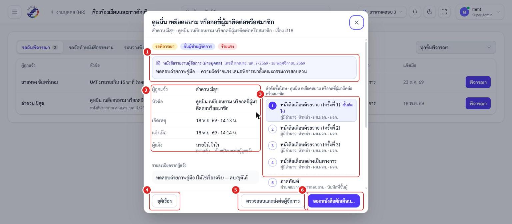
- 1หนังสือรายงานผู้จัดการ (ฝ่ายบุคคล) — เลขที่ วันที่ และสรุปเรื่อง แสดงที่ด้านบน
- 2ข้อมูลเรื่อง และผู้แจ้ง (ความลับ)
- 3ลำดับขั้นโทษ — ขั้น 1–4 ออกหนังสือได้ ขั้น 5–8 บันทึกที่ขั้นผู้จัดการ
- 4ยุติเรื่อง
- 5ตรวจสอบและส่งต่อผู้จัดการ — ผช.ผจก. ตรวจแล้วส่งต่อ (ไม่ได้ตัดสินโทษขั้นสูง)
- 6ออกหนังสือตักเตือน... — ผช.ผจก. ยังออกหนังสือตักเตือนขั้น 1–4 ได้
หน้าต่าง "ตรวจสอบและส่งต่อผู้จัดการ"
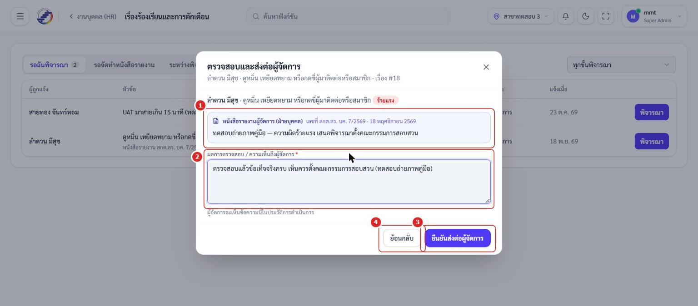
- 1หนังสือรายงานของฝ่ายบุคคล — แสดงให้อ่านก่อนส่งต่อ
- 2ผลการตรวจสอบ / ความเห็นถึงผู้จัดการ (บังคับ) — ผู้จัดการเห็นข้อความนี้ในประวัติการดำเนินการ
- 3ยืนยันส่งต่อผู้จัดการ
- 4ย้อนกลับ
ภาพนี้ส่งต่อเรื่องทดสอบจริงบน staging เพื่อให้เรื่องไปถึงขั้นผู้จัดการ (เรื่องทดสอบถูกยุติหลังถ่ายภาพเสร็จ)
ระบบตักเตือนพนักงานเรื่องระเบียบอ้างอิง สัญญาข้อ 7.1 งวดที่ 4
6
ผู้จัดการ: บันทึกวินัยและโทษทางวินัย (1/4)
ผู้ใช้: ฝ่ายบุคคล หรือ ผู้จัดการ (สิทธิ์บันทึกผลวินัย) — เมื่อเรื่องอยู่ขั้นผู้จัดการ
เมนู: เรื่องร้องเรียน/ตักเตือน → พิจารณา → ปุ่ม บันทึกวินัยและโทษทางวินัย
รายละเอียดเรื่องที่ขั้นผู้จัดการ
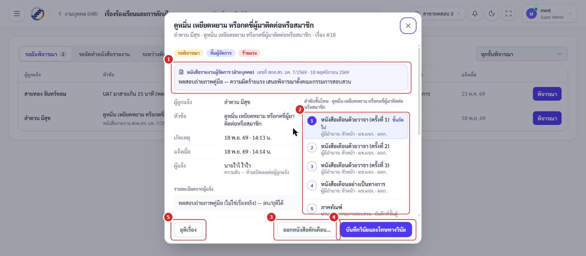
- 1หนังสือรายงานของฝ่ายบุคคล
- 2ลำดับขั้นโทษ — ขั้น 5–8 บันทึกผ่านฟอร์มด้านล่าง ไม่ใช่ปุ่มออกหนังสือ
- 3ออกหนังสือตักเตือน... — ยังใช้ได้สำหรับขั้น 1–4
- 4บันทึกวินัยและโทษทางวินัย — เปิดฟอร์มบันทึกผลสอบสวนและโทษ (ปรากฏเมื่ออยู่ขั้นผู้จัดการและมีสิทธิ์บันทึก)
- 5ยุติเรื่อง
ฟอร์มส่วนที่ 1 ข้อเท็จจริง
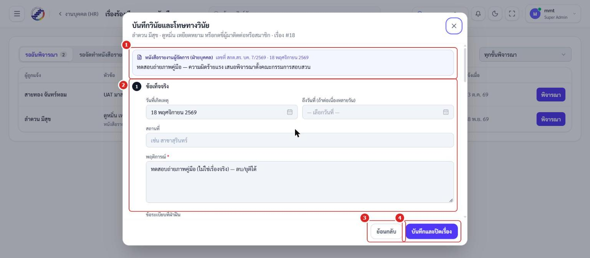
- 1หนังสือรายงานของฝ่ายบุคคล แสดงที่หัวฟอร์ม
- 2ข้อเท็จจริง — วันที่เกิดเหตุ · ถึงวันที่ (ถ้าต่อเนื่อง) · สถานที่ · พฤติการณ์ (บังคับ ดึงจากเรื่องมาให้ก่อน)
- 3ย้อนกลับ
- 4บันทึกและปิดเรื่อง — บันทึกแล้วเรื่องปิดทันที และแก้ได้เฉพาะส่วน "การแจ้งผล/อุทธรณ์" ภายหลัง
ฟอร์มนี้มี 5 ส่วนในหน้าเดียว: 1 ข้อเท็จจริง · 2 การสอบสวน · 3 มติ/คำสั่ง (ซ่อนเมื่อไม่มีความผิด) · 4 การแจ้งผล · 5 เอกสารแนบ ภาพชุดนี้เปิดฟอร์มดูโดยไม่กดบันทึก
ระบบตักเตือนพนักงานเรื่องระเบียบอ้างอิง สัญญาข้อ 7.1 งวดที่ 4
7
ฟอร์มบันทึกวินัย: ข้อระเบียบและการสอบสวน (2/4)
ผู้ใช้: ฝ่ายบุคคล · ผู้จัดการ
เมนู: บันทึกวินัยและโทษทางวินัย → ส่วนที่ 1–2
ข้อระเบียบที่ฝ่าฝืน และการเลือกว่าตั้งคณะกรรมการหรือไม่
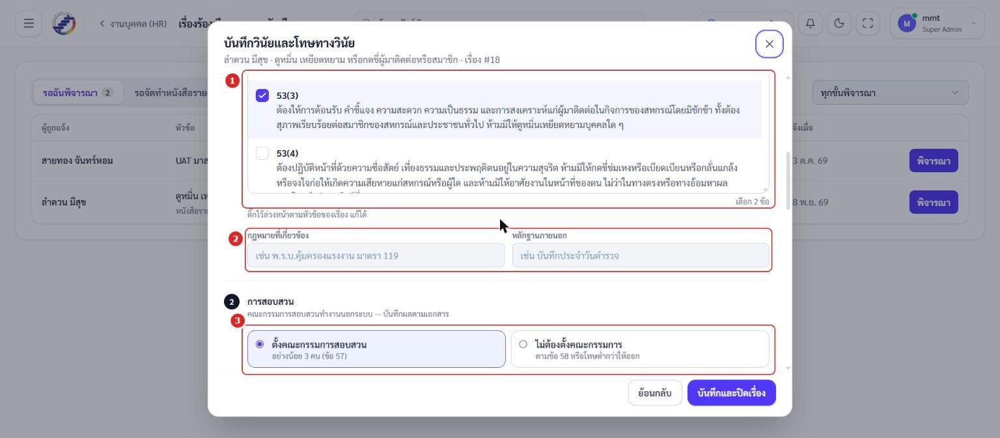
- 1ข้อระเบียบที่ฝ่าฝืน — ติ๊กไว้ล่วงหน้าตามข้อเริ่มต้นของหัวข้อ แก้ได้ (ต้องมีอย่างน้อย 1 ข้อเมื่อมีความผิด)
- 2กฎหมายที่เกี่ยวข้อง และ หลักฐานภายนอก — ไม่บังคับ
- 3ส่วนที่ 2 การสอบสวน — เลือก "ตั้งคณะกรรมการสอบสวน" (อย่างน้อย 3 คน ข้อ 57) หรือ "ไม่ต้องตั้งคณะกรรมการ" (ตามข้อ 58 หรือโทษต่ำกว่าให้ออก)
เมื่อเลือกตั้งคณะกรรมการ
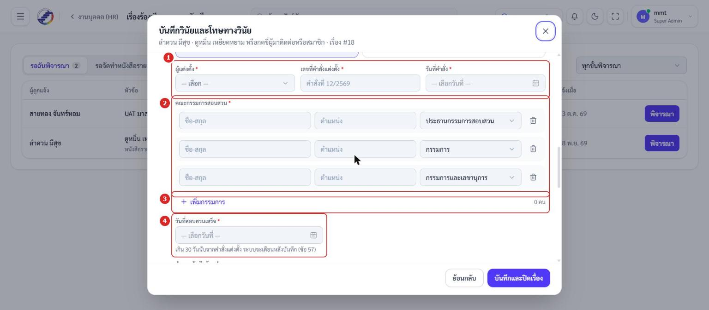
- 1ผู้แต่งตั้ง (คณะกรรมการดำเนินการ / ผู้จัดการ) · เลขที่คำสั่ง · วันที่คำสั่ง — บังคับ
- 2คณะกรรมการสอบสวน — แถวละคน (ชื่อ ตำแหน่ง บทบาท: ประธาน / กรรมการ / กรรมการและเลขานุการ) เริ่มต้น 3 แถว
- 3เพิ่มกรรมการ — ตัวนับแสดงจำนวนคนที่กรอกชื่อแล้ว
- 4วันที่สอบสวนเสร็จ — ถ้าเกิน 30 วันนับจากคำสั่งแต่งตั้ง ระบบเตือนหลังบันทึก (ข้อ 57) แต่ไม่ขัดขวางการบันทึก
ถ้าเลือก "ไม่ต้องตั้งคณะกรรมการ" จะต้องเลือกเหตุตามข้อ 58 (จำคุก · ล้มละลาย · รับสารภาพว่าทุจริต · ขาดงานเกิน 15 วัน) หรือ "โทษต่ำกว่าให้ออก" — โทษให้ออก/ไล่ออกใช้เหตุ "โทษต่ำกว่าให้ออก" ไม่ได้
ระบบตักเตือนพนักงานเรื่องระเบียบอ้างอิง สัญญาข้อ 7.1 งวดที่ 4
8
ฟอร์มบันทึกวินัย: ผลการสอบสวนและมติ/คำสั่ง (3/4)
ผู้ใช้: ฝ่ายบุคคล · ผู้จัดการ
เมนู: บันทึกวินัยและโทษทางวินัย → ส่วนที่ 2–3
ผลการสอบสวน
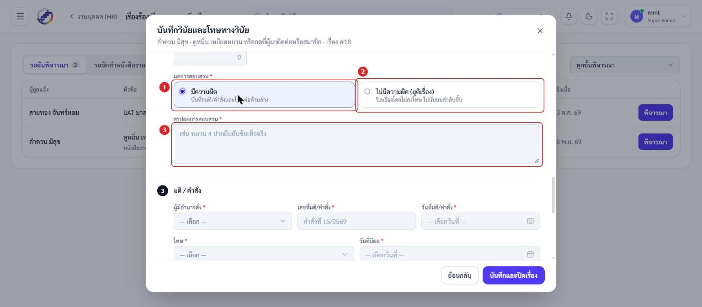
- 1มีความผิด — เปิดส่วนมติ/คำสั่งและโทษ
- 2ไม่มีความผิด (ยุติเรื่อง) — ปิดเรื่องโดยไม่ลงโทษและไม่นับบนลำดับขั้น (ส่วนมติ/คำสั่งหายไป)
- 3สรุปผลการสอบสวน (บังคับ)
ส่วนที่ 3 มติ / คำสั่ง
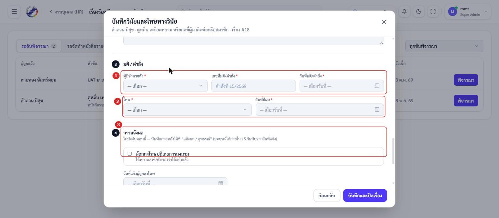
- 1ผู้มีอำนาจสั่ง (คณะกรรมการดำเนินการ / ประธานกรรมการ / ผู้จัดการ) · เลขที่มติ/คำสั่ง · วันที่ (ไม่เกินวันนี้)
- 2โทษ และ วันที่มีผล — บังคับทั้งคู่
- 3ส่วนการแจ้งผล — ไม่บังคับตอนนี้ บันทึกภายหลังได้
หัวข้อที่เป็นโทษขั้นสูงใช้ผู้มีอำนาจใดก็ได้ตามที่ AMC กำหนดในมติ ระบบบันทึกตามที่เลือกโดยไม่จำกัดตามขั้น
ระบบตักเตือนพนักงานเรื่องระเบียบอ้างอิง สัญญาข้อ 7.1 งวดที่ 4
9
ฟอร์มบันทึกวินัย: เลือกโทษและช่องเพิ่มของแต่ละโทษ (4/4)
ผู้ใช้: ฝ่ายบุคคล · ผู้จัดการ
เมนู: บันทึกวินัยและโทษทางวินัย → ส่วนที่ 3 → ช่อง โทษ
รายการโทษ
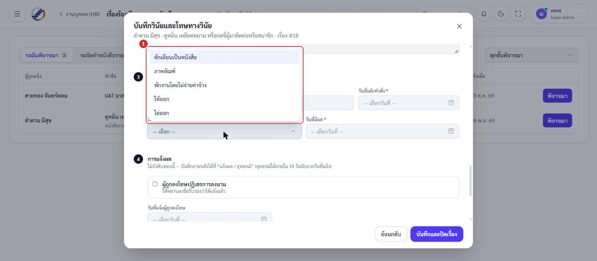
- 1โทษที่บันทึกได้ 5 อย่าง — ตักเตือนเป็นหนังสือ (ขั้น 4) · ภาคทัณฑ์ (5) · พักงานโดยไม่จ่ายค่าจ้าง (6) · ให้ออก (7) · ไล่ออก (8)
ตัวอย่างเมื่อเลือก "พักงานโดยไม่จ่ายค่าจ้าง"
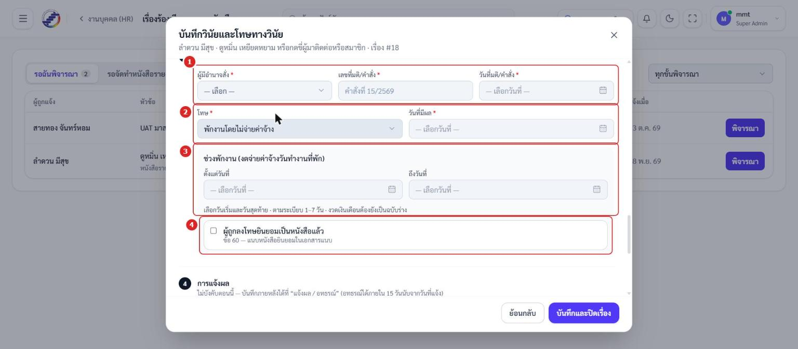
- 1ผู้มีอำนาจสั่ง · เลขที่และวันที่มติ/คำสั่ง
- 2โทษ และ วันที่มีผล
- 3ช่วงพักงาน — ตั้งแต่วันที่ ถึงวันที่ (ตามระเบียบ 1–7 วัน) และงวดเงินเดือนต้องยังเป็นฉบับร่าง
- 4ผู้ถูกลงโทษยินยอมเป็นหนังสือแล้ว (ข้อ 60) — ต้องติ๊กจึงบันทึกพักงานได้
ภาคทัณฑ์มีช่อง "ทัณฑ์บน" · ให้ออก/ไล่ออกมีช่อง จ่ายค่าชดเชย ค่าจ้างงวดสุดท้าย และค่าเสียหาย แล้วระบบเปิดฟอร์ม "บันทึกการพ้นสภาพ" ให้กรอกไว้แล้ว · พักงานคำนวณงดจ่ายในเงินเดือนและคำนวณงวดที่สร้างแล้วใหม่ให้
ระบบตักเตือนพนักงานเรื่องระเบียบอ้างอิง สัญญาข้อ 7.1 งวดที่ 4
10
ส่วนการแจ้งผลและเอกสารแนบ แล้วบันทึกและปิดเรื่อง
ผู้ใช้: ฝ่ายบุคคล · ผู้จัดการ
เมนู: บันทึกวินัยและโทษทางวินัย → ส่วนที่ 4–5
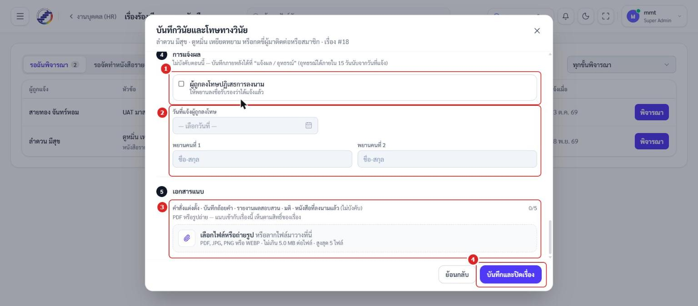
- 1ผู้ถูกลงโทษปฏิเสธการลงนาม — ติ๊กเมื่อให้พยานลงชื่อรับรองว่าแจ้งแล้ว
- 2วันที่แจ้งผู้ถูกลงโทษ และพยานคนที่ 1 / 2 — ไม่บังคับ กรอกภายหลังได้ที่ "แจ้งผล / อุทธรณ์"
- 3เอกสารแนบ — คำสั่งแต่งตั้ง · บันทึกถ้อยคำ · รายงานผลสอบสวน · มติ · หนังสือที่ลงนามแล้ว (PDF หรือรูป ไม่เกิน 5 ไฟล์)
- 4บันทึกและปิดเรื่อง — แสดงคำเตือน (เช่น สอบสวนเกิน 30 วัน) และเปิดฟอร์มพ้นสภาพอัตโนมัติเมื่อให้ออก/ไล่ออก
ภาพชุดนี้ไม่ได้กดบันทึก เพื่อไม่ให้เปลี่ยนสถานะของเรื่องทดสอบ
ระบบตักเตือนพนักงานเรื่องระเบียบอ้างอิง สัญญาข้อ 7.1 งวดที่ 4
11
เรื่องที่ปิดแล้วและบันทึกวินัย
ผู้ใช้: ผู้จัดการ · ผช.ผจก. · ฝ่ายบุคคล
เมนู: เรื่องร้องเรียน/ตักเตือน → แท็บ ปิดแล้ว → ปุ่ม ดู
แท็บ "ปิดแล้ว"
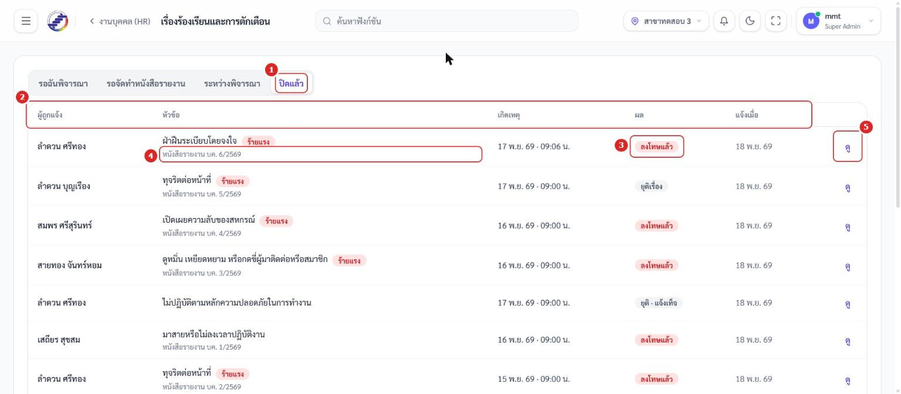
- 1แท็บ ปิดแล้ว
- 2ตารางเรื่องที่ปิด
- 3ผล — "ลงโทษแล้ว" · "ยุติเรื่อง" · "ยุติ · แจ้งเท็จ"
- 4เลขที่หนังสือรายงาน ของฝ่ายบุคคล (บค. ลำดับ/ปี)
- 5ดู — เปิดรายละเอียดอ่านอย่างเดียว
เรื่องที่ปิดพร้อม "บันทึกวินัยและโทษทางวินัย"
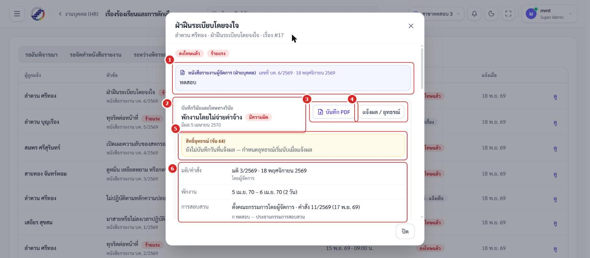
- 1หนังสือรายงานผู้จัดการ (ฝ่ายบุคคล)
- 2การ์ดบันทึกวินัย — โทษ ป้ายมีความผิด และวันที่มีผล
- 3บันทึก PDF — ดาวน์โหลดบันทึกวินัยและโทษทางวินัย (5 ส่วน)
- 4แจ้งผล / อุทธรณ์ — บันทึกการแจ้งผลและผลอุทธรณ์
- 5สิทธิ์อุทธรณ์ (ข้อ 64) — เมื่อบันทึกวันที่แจ้งแล้วระบบนับถอยหลัง 15 วัน
- 6มติ/คำสั่ง · ช่วงพักงาน · การสอบสวน และข้อมูลอื่น ๆ ของบันทึก
เรื่องที่ปิดแล้วอ่านย้อนหลังได้ แก้ผลการพิจารณาไม่ได้ ผลอุทธรณ์ที่บันทึกไม่เปลี่ยนโทษอัตโนมัติ — ฝ่ายบุคคลจัดการเองหากโทษถูกยกเลิกหรือลด
ระบบตักเตือนพนักงานเรื่องระเบียบอ้างอิง สัญญาข้อ 7.1 งวดที่ 4
12
แจ้งผลและบันทึกอุทธรณ์
ผู้ใช้: ฝ่ายบุคคล
เมนู: เรื่องที่ปิดแล้ว → ปุ่ม แจ้งผล / อุทธรณ์
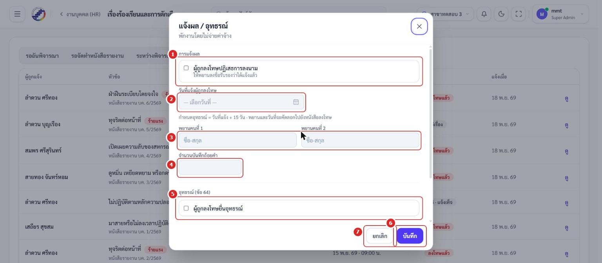
- 1ปฏิเสธการลงนาม
- 2วันที่แจ้งผู้ถูกลงโทษ — ใช้คำนวณกำหนดอุทธรณ์ (+15 วัน)
- 3พยานคนที่ 1 / 2 — พิมพ์ลงหนังสือลงโทษด้วย
- 4จำนวนบันทึกถ้อยคำ
- 5อุทธรณ์ (ข้อ 64) — ติ๊กเมื่อผู้ถูกลงโทษยื่นอุทธรณ์ แล้วบันทึกวันที่ยื่น ผล และวันที่ตัดสิน
- 6บันทึก
- 7ยกเลิก
ภาพนี้ไม่ได้กดบันทึก — วันที่แจ้งและพยานจะไปปรากฏบน PDF หนังสือของโทษนั้นด้วย
ระบบตักเตือนพนักงานเรื่องระเบียบอ้างอิง สัญญาข้อ 7.1 งวดที่ 4
13
แจ้งเรื่องการกระทำผิดระเบียบ (พนักงาน)
ผู้ใช้: พนักงานทุกคน
เมนู: หน้าหลัก → แจ้งเรื่อง / ประวัติการตักเตือน → แท็บ แจ้งเรื่อง
ส่วนบนของแบบฟอร์ม
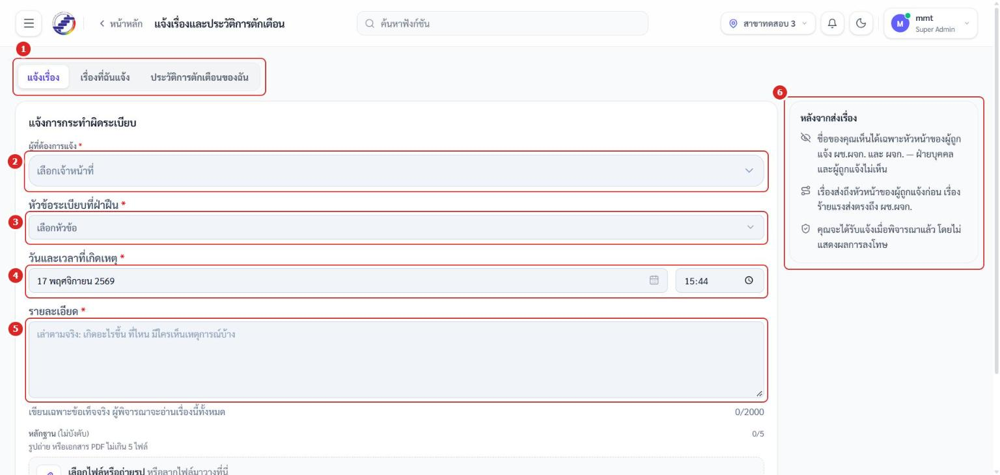
- 13 แท็บ — แจ้งเรื่อง · เรื่องที่ฉันแจ้ง · ประวัติการตักเตือนของฉัน
- 2ผู้ที่ต้องการแจ้ง (บังคับ) — เลือกเจ้าหน้าที่
- 3หัวข้อระเบียบที่ฝ่าฝืน (บังคับ)
- 4วันและเวลาที่เกิดเหตุ (บังคับ) — ใช้ปฏิทินของระบบ แสดงปี พ.ศ.
- 5รายละเอียด (บังคับ, ไม่เกิน 2,000 ตัวอักษร) — ให้เขียนเฉพาะข้อเท็จจริง
- 6กล่องข้อมูลความเป็นส่วนตัว — ชื่อผู้แจ้งเห็นได้เฉพาะหัวหน้าของผู้ถูกแจ้ง ผช.ผจก. และ ผจก. ฝ่ายบุคคลและผู้ถูกแจ้งไม่เห็น · เรื่องส่งถึงหัวหน้าของผู้ถูกแจ้งก่อน เรื่องร้ายแรงส่งถึงฝ่ายบุคคลก่อน แล้วต่อถึง ผช.ผจก. · ผู้แจ้งจะได้รับแจ้งเมื่อพิจารณาแล้ว โดยไม่แสดงผลการลงโทษ
ส่วนล่างของแบบฟอร์ม
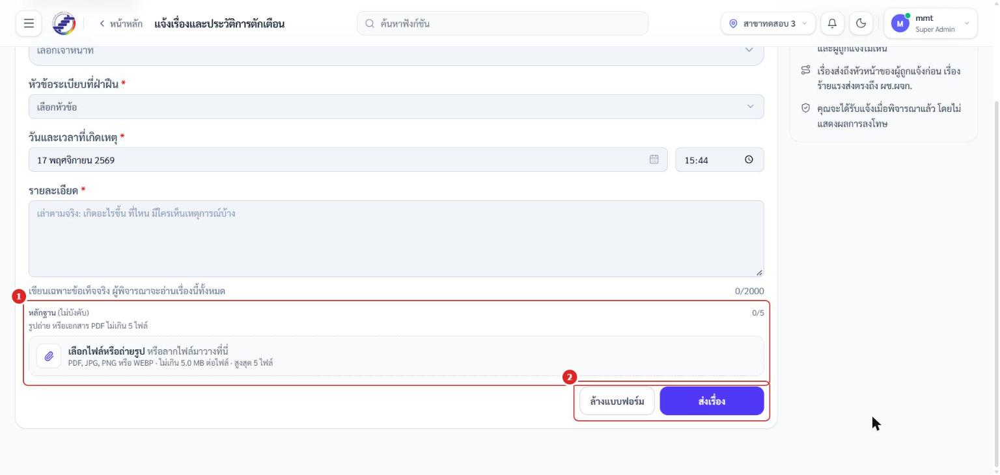
- 1หลักฐาน (ไม่บังคับ) — รูปถ่ายหรือเอกสาร PDF · PDF, JPG, PNG, WEBP ไม่เกิน 5.0 MB ต่อไฟล์ สูงสุด 5 ไฟล์
- 2ล้างแบบฟอร์ม และ ส่งเรื่อง
ภาพนี้ไม่ได้กด "ส่งเรื่อง" เพื่อไม่ให้สร้างเรื่องร้องเรียนทดสอบเพิ่ม
ระบบตักเตือนพนักงานเรื่องระเบียบอ้างอิง สัญญาข้อ 7.1 งวดที่ 4
14
ติดตามเรื่องที่ฉันแจ้ง และประวัติการตักเตือน
ผู้ใช้: พนักงานทุกคน
เมนู: แจ้งเรื่อง / ประวัติการตักเตือน → แท็บ เรื่องที่ฉันแจ้ง / ประวัติการตักเตือนของฉัน
แท็บ "เรื่องที่ฉันแจ้ง"
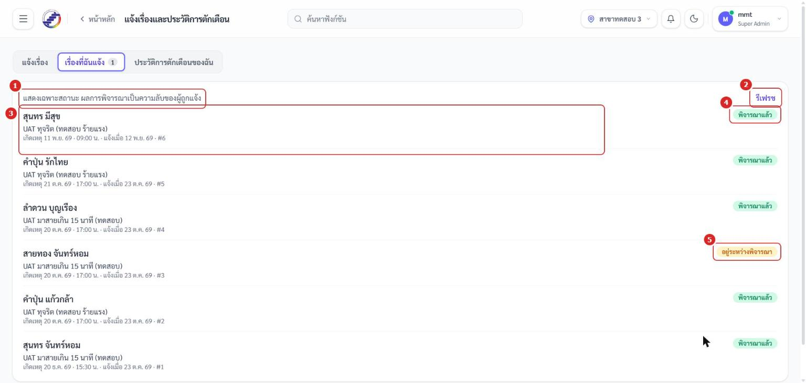
- 1ข้อความอธิบาย — แสดงเฉพาะสถานะ ผลการพิจารณาเป็นความลับของผู้ถูกแจ้ง
- 2รีเฟรช
- 3รายการเรื่องที่แจ้ง — ชื่อผู้ถูกแจ้ง หัวข้อ เวลาเกิดเหตุ วันที่แจ้ง และเลขที่เรื่อง
- 4พิจารณาแล้ว (ป้ายเขียว)
- 5อยู่ระหว่างพิจารณา (ป้ายเหลือง)
แท็บ "ประวัติการตักเตือนของฉัน"
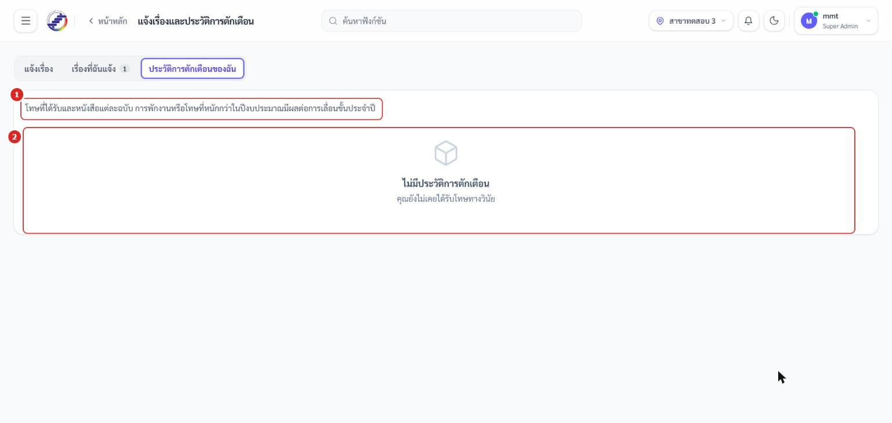
- 1คำอธิบาย — โทษที่ได้รับและหนังสือแต่ละฉบับ การพักงานหรือโทษที่หนักกว่าในปีงบประมาณมีผลต่อการเลื่อนขั้นประจำปี
- 2สถานะว่าง — "ไม่มีประวัติการตักเตือน" เมื่อไม่เคยได้รับโทษทางวินัย
เมื่อมีประวัติ จะแสดงโทษและหนังสือแต่ละฉบับให้ดาวน์โหลดได้ที่แท็บนี้
ระบบตักเตือนพนักงานเรื่องระเบียบอ้างอิง สัญญาข้อ 7.1 งวดที่ 4
15
ตั้งค่าวินัย: หัวข้อระเบียบและเกณฑ์
ผู้ใช้: ฝ่ายบุคคล · ผู้ดูแลระบบ
เมนู: ภาพรวมงานบุคคล → ตั้งค่า → ตั้งค่าวินัย
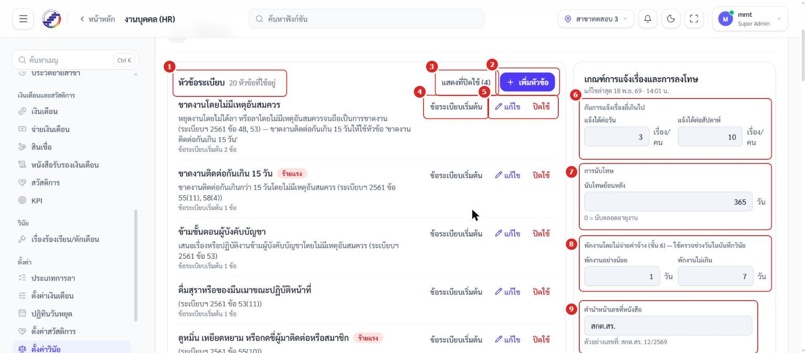
- 1หัวข้อระเบียบ — รายการหัวข้อที่ใช้อยู่ ป้าย "ร้ายแรง" ใช้กับความผิดร้ายแรง
- 2เพิ่มหัวข้อ
- 3แสดงที่ปิดใช้ — ดูหัวข้อที่ปิดใช้แล้ว (จำนวนในวงเล็บ)
- 4ข้อระเบียบเริ่มต้น — ตั้งข้อที่ติ๊กไว้ล่วงหน้าของหัวข้อนั้น (แสดงจำนวนข้อใต้ชื่อหัวข้อ)
- 5แก้ไข / ปิดใช้ ของแต่ละหัวข้อ
- 6กันการแจ้งเรื่องถี่เกินไป — จำกัดจำนวนเรื่องที่แจ้งได้ต่อวันและต่อสัปดาห์ต่อคน
- 7การนับโทษ — นับโทษย้อนหลังกี่วัน (0 = นับตลอดอายุงาน)
- 8พักงาน (ขั้น 6) — งดจ่ายค่าจ้างวันทำงานที่พัก กำหนดพักอย่างน้อยและไม่เกินกี่วัน
- 9คำนำหน้าเลขที่หนังสือ — พร้อมตัวอย่างเลขที่ที่จะออก
ถ้อยคำเรียกการหักค่าจ้างในระบบนี้ใช้คำว่า "งดจ่าย" ตามที่ TOR กำหนด
ระบบตักเตือนพนักงานเรื่องระเบียบอ้างอิง สัญญาข้อ 7.1 งวดที่ 4
16
ข้อระเบียบ: รายการข้อที่หนังสือและบันทึกวินัยอ้างถึง
ผู้ใช้: ฝ่ายบุคคล · ผู้ดูแลระบบ
เมนู: ตั้งค่าวินัย → ส่วน ข้อระเบียบ (ใต้หัวข้อระเบียบ)
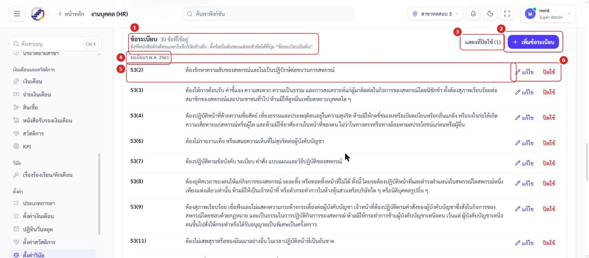
- 1ข้อระเบียบ — จำนวนข้อที่ใช้อยู่ และคำอธิบายการใช้งาน
- 2เพิ่มข้อระเบียบ — กรอกเลขข้อ ข้อความ ปีระเบียบ (เริ่มต้น 2561) และลำดับ
- 3แสดงที่ปิดใช้
- 4กลุ่มตามปีของระเบียบ เช่น ระเบียบฯ พ.ศ. 2561 เรียงตามลำดับ
- 5แต่ละข้อ — เลขข้อและข้อความเต็ม
- 6แก้ไข / ปิดใช้ — ลบไม่ได้ ปิดใช้แล้วข้อหายจากรายการเลือกแต่ยังอยู่บนหนังสือเก่า
เลขข้อซ้ำในปีระเบียบเดียวกันไม่ได้ ระบบแจ้งว่า "มีข้อระเบียบ ... อยู่แล้ว"
ระบบตักเตือนพนักงานเรื่องระเบียบอ้างอิง สัญญาข้อ 7.1 งวดที่ 4
17
ตั้งข้อระเบียบเริ่มต้นของหัวข้อ
ผู้ใช้: ฝ่ายบุคคล · ผู้ดูแลระบบ
เมนู: ตั้งค่าวินัย → หัวข้อระเบียบ → ปุ่ม ข้อระเบียบเริ่มต้น
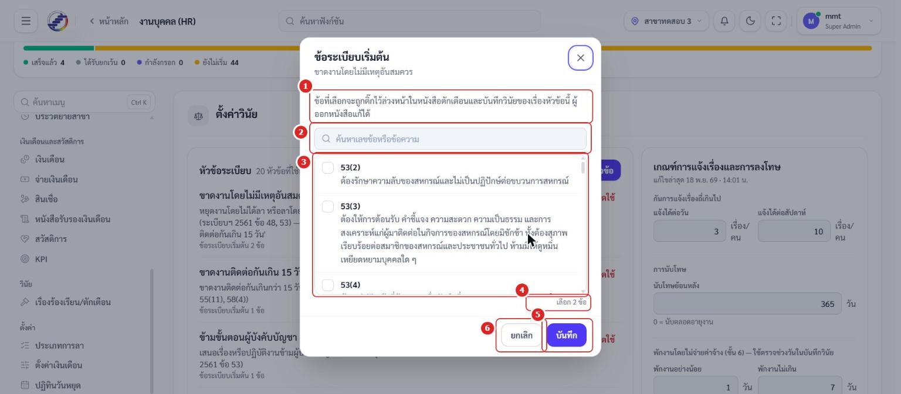
- 1คำอธิบาย — ข้อที่เลือกจะถูกติ๊กไว้ล่วงหน้าในหนังสือตักเตือนและบันทึกวินัยของเรื่องหัวข้อนี้ ผู้ออกหนังสือแก้ได้
- 2ค้นหา เลขข้อหรือข้อความ
- 3รายการข้อระเบียบ — ติ๊กได้หลายข้อ
- 4จำนวนที่เลือก
- 5บันทึก — ใช้แทนรายการเดิมทั้งชุด (ไม่เลือกเลย = ล้างข้อเริ่มต้น)
- 6ยกเลิก
ภาพนี้ปิดหน้าต่างโดยไม่บันทึก จึงไม่เปลี่ยนข้อเริ่มต้นของหัวข้อใด
ระบบตักเตือนพนักงานเรื่องระเบียบอ้างอิง สัญญาข้อ 7.1 งวดที่ 4
18
เพิ่ม / แก้ไขหัวข้อระเบียบ
ผู้ใช้: ฝ่ายบุคคล · ผู้ดูแลระบบ
เมนู: ตั้งค่าวินัย → ปุ่ม เพิ่มหัวข้อ (หรือ แก้ไข)
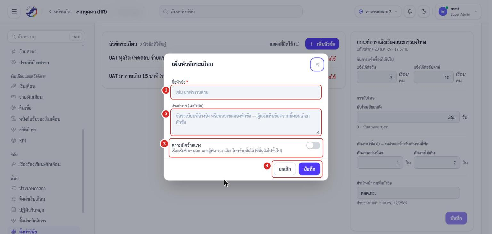
- 1ชื่อหัวข้อ (บังคับ) — เช่น มาทำงานสาย
- 2คำอธิบาย (ไม่บังคับ) — ระเบียบที่อ้างอิงหรือขอบเขตของหัวข้อ ผู้แจ้งเห็นข้อความนี้ตอนเลือกหัวข้อ
- 3ความผิดร้ายแรง — เมื่อเปิด เรื่องจะเริ่มที่ ผช.ผจก. และผู้พิจารณาเลือกโทษข้ามขั้นได้
- 4ยกเลิก / บันทึก
ภาพนี้ปิดหน้าต่างโดยไม่บันทึก จึงไม่มีหัวข้อทดสอบเพิ่มในระบบ
ระบบรายงานปัญหาและการแก้ไขข้อมูลอ้างอิง TOR ข้อ 3.6
1
จุดเริ่มต้นแจ้งแก้ไขข้อมูลและคำร้องของฉัน (พนักงาน)
ผู้ใช้: พนักงานทุกคน
เมนู: หน้าหลัก → ข้อมูลส่วนตัว
หน้า "ข้อมูลส่วนตัว"
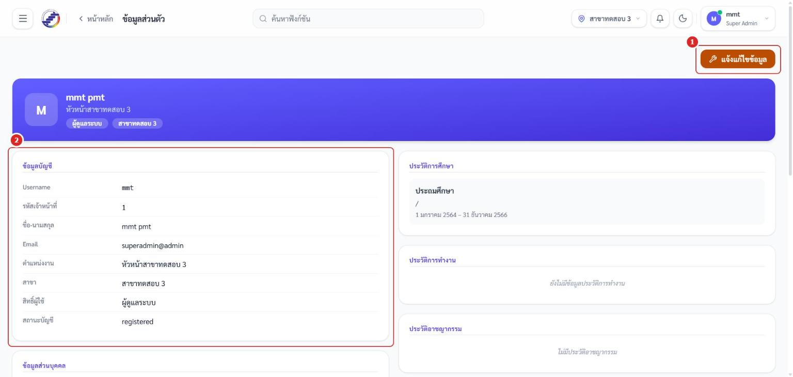
- 1แจ้งแก้ไขข้อมูล — ปุ่มเปิดแบบฟอร์มคำร้อง (ส้ม)
- 2ข้อมูลบัญชี — ข้อมูลที่แสดงอยู่ ถ้าไม่ถูกต้องให้ใช้ปุ่มด้านบน
ส่วน "คำร้องแจ้งแก้ไขข้อมูลของฉัน" ท้ายหน้า
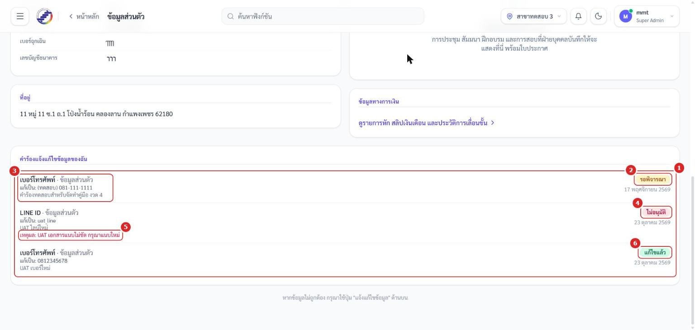
- 1รายการคำร้องของฉัน เรียงจากใหม่ไปเก่า
- 2รอพิจารณา — ป้ายเหลือง พร้อมวันที่ส่ง
- 3ข้อมูลที่แจ้ง — หมวด ค่าใหม่ที่ขอแก้ และรายละเอียด
- 4ไม่อนุมัติ — ป้ายแดง
- 5เหตุผลที่ไม่อนุมัติ — ข้อความสีแดงจากผู้พิจารณา
- 6แก้ไขแล้ว — ป้ายเขียว
เมื่อฝ่ายบุคคลพิจารณาแล้ว พนักงานจะได้รับการแจ้งเตือนและเห็นสถานะที่ส่วนนี้
ระบบรายงานปัญหาและการแก้ไขข้อมูลอ้างอิง TOR ข้อ 3.6
2
กรอกแบบฟอร์ม "แจ้งแก้ไขข้อมูล"
ผู้ใช้: พนักงานทุกคน
เมนู: ข้อมูลส่วนตัว → ปุ่ม แจ้งแก้ไขข้อมูล
ขั้นที่ 1 — เริ่มจากเลือกหมวดหมู่
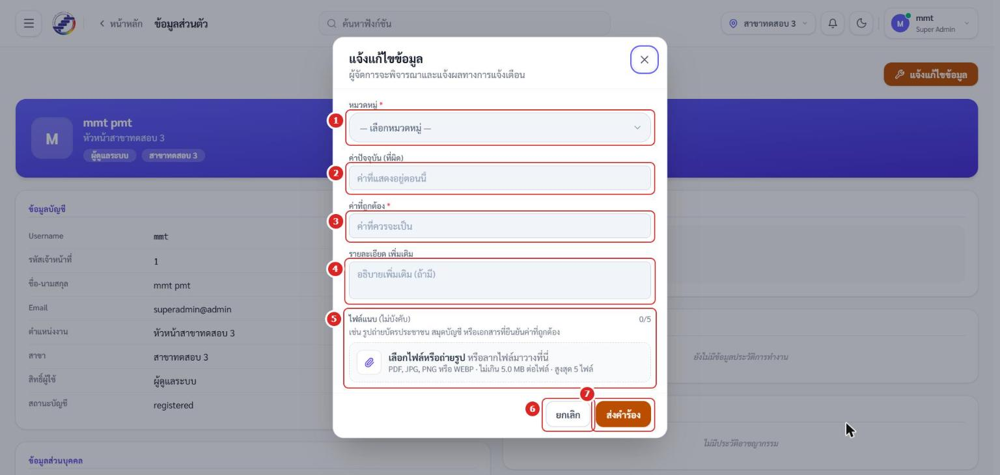
- 1หมวดหมู่ (บังคับ)
- 2ค่าปัจจุบัน (ที่ผิด) — ค่าที่แสดงอยู่ตอนนี้
- 3ค่าที่ถูกต้อง (บังคับ)
- 4รายละเอียดเพิ่มเติม (ถ้ามี)
- 5ไฟล์แนบ (ไม่บังคับ) — รูปบัตรประชาชน สมุดบัญชี หรือเอกสารที่ยืนยันค่าที่ถูกต้อง ไม่เกิน 5 ไฟล์ ไฟล์ละไม่เกิน 5.0 MB
- 6ยกเลิก
- 7ส่งคำร้อง
เมื่อกดเลือกหมวดหมู่
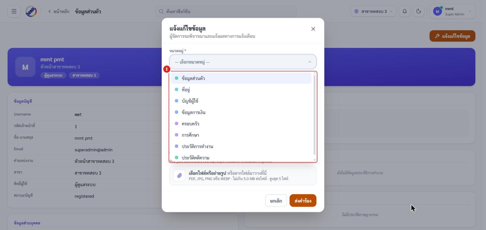
- 1รายการหมวดหมู่ — ข้อมูลส่วนตัว · ที่อยู่ · บัญชีผู้ใช้ · ข้อมูลการเงิน · ครอบครัว · การศึกษา · ประวัติการทำงาน · ประวัติคดีความ
หลังเลือกหมวดหมู่ ระบบจะเพิ่มช่อง "ข้อมูลที่ต้องการแก้" ให้เลือกรายการข้อมูลในหมวดนั้น (เช่น เบอร์โทรศัพท์ · LINE ID · เลขบัญชีธนาคาร)
ระบบรายงานปัญหาและการแก้ไขข้อมูลอ้างอิง TOR ข้อ 3.6
3
ตัวอย่างการกรอกและส่งคำร้อง
ผู้ใช้: พนักงานทุกคน
เมนู: แจ้งแก้ไขข้อมูล → กรอกข้อมูล → ส่งคำร้อง
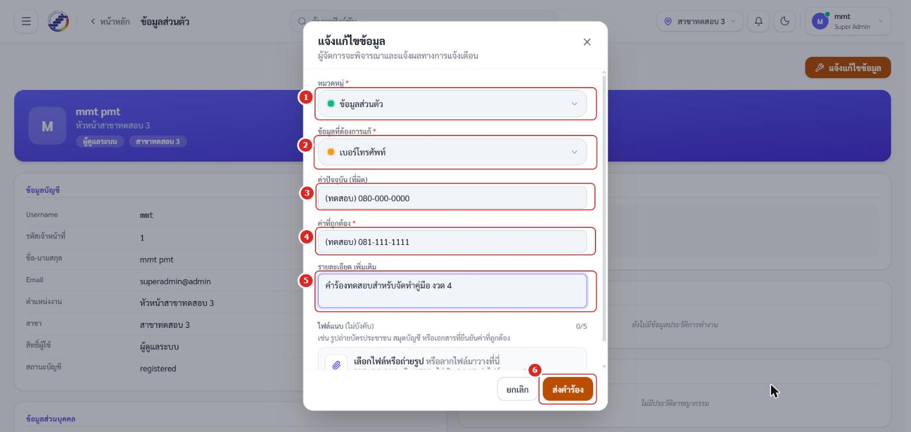
- 1หมวดหมู่ = ข้อมูลส่วนตัว
- 2ข้อมูลที่ต้องการแก้ = เบอร์โทรศัพท์
- 3ค่าปัจจุบัน (ที่ผิด)
- 4ค่าที่ถูกต้อง
- 5รายละเอียดเพิ่มเติม
- 6ส่งคำร้อง — เมื่อส่งสำเร็จ ระบบแสดง "ส่งคำร้องแล้ว" และบอกว่าติดตามสถานะได้ที่ "คำร้องของฉัน"
ข้อมูลในภาพเป็นค่าทดสอบ (ขึ้นต้นด้วย "(ทดสอบ)") บน staging
ระบบรายงานปัญหาและการแก้ไขข้อมูลอ้างอิง TOR ข้อ 3.6
4
รายการคำร้องของฝ่ายบุคคล
ผู้ใช้: ฝ่ายบุคคล · ผู้ดูแลระบบ
เมนู: ภาพรวมงานบุคคล → ระบบ → รายงานปัญหา
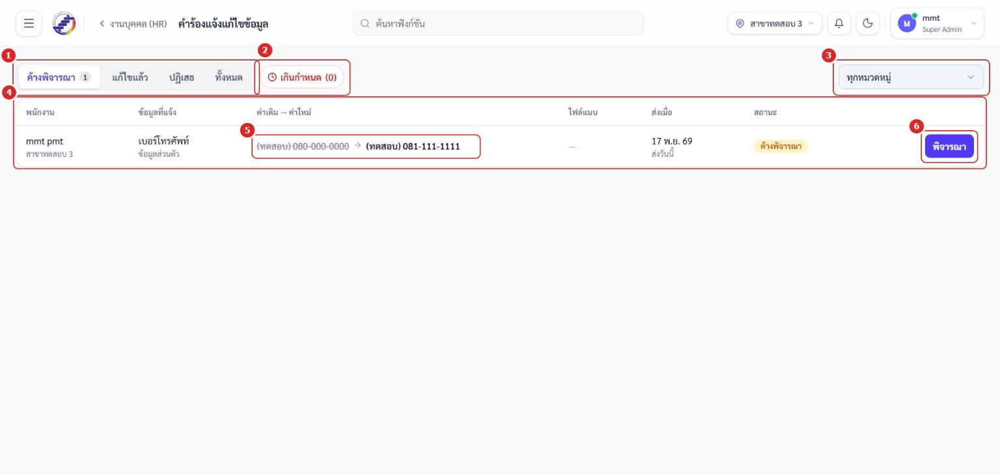
- 1แท็บสถานะ — ค้างพิจารณา (พร้อมตัวเลข) · แก้ไขแล้ว · ปฏิเสธ · ทั้งหมด
- 2เกินกำหนด — จำนวนคำร้องที่ค้างเกินกำหนด
- 3กรองหมวดหมู่
- 4ตารางคำร้อง — พนักงาน/สาขา ข้อมูลที่แจ้ง ค่าเดิม→ค่าใหม่ ไฟล์แนบ วันที่ส่ง และสถานะ
- 5ค่าเดิม → ค่าใหม่ — ค่าเดิมถูกขีดฆ่า ค่าใหม่ตัวหนา
- 6พิจารณา — เปิดหน้าต่างอนุมัติ/ปฏิเสธ
เมนูข้างซ้ายของงานบุคคลมีตัวเลขที่ "รายงานปัญหา" บอกจำนวนคำร้องที่ค้างอยู่
ระบบรายงานปัญหาและการแก้ไขข้อมูลอ้างอิง TOR ข้อ 3.6
5
อนุมัติหรือปฏิเสธคำร้อง
ผู้ใช้: ฝ่ายบุคคล · ผู้ดูแลระบบ
เมนู: รายงานปัญหา → ปุ่ม พิจารณา
หน้าต่างพิจารณาคำร้อง
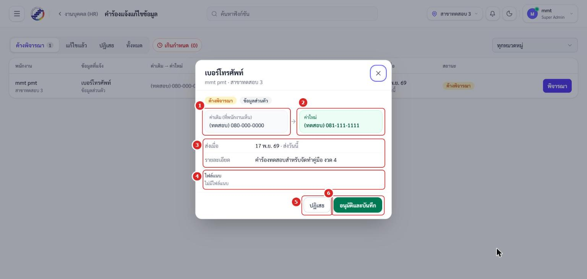
- 1ค่าเดิม (ที่พนักงานเห็น)
- 2ค่าใหม่ ที่พนักงานขอแก้
- 3วันที่ส่ง และรายละเอียด
- 4ไฟล์แนบ — กดดูหลักฐานได้ (ที่นี่ไม่มีไฟล์แนบ)
- 5ปฏิเสธ — ไปขั้นกรอกเหตุผล
- 6อนุมัติและบันทึก — อนุมัติคำร้องและบันทึกค่าใหม่ (สถานะเปลี่ยนเป็น "แก้ไขแล้ว")
ขั้นกรอกเหตุผลที่ปฏิเสธ
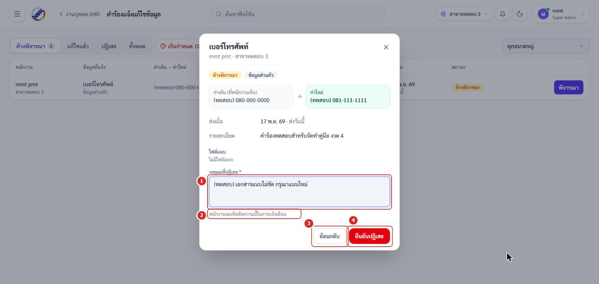
- 1เหตุผลที่ปฏิเสธ (บังคับ)
- 2ข้อความนี้พนักงานจะเห็นในการแจ้งเตือน
- 3ย้อนกลับ
- 4ยืนยันปฏิเสธ
ในภาพ ระบบไม่ได้ปฏิเสธจริง เพราะผู้พิจารณาเป็นเจ้าของคำร้องเอง (ดูหน้าถัดไป)
ระบบรายงานปัญหาและการแก้ไขข้อมูลอ้างอิง TOR ข้อ 3.6
6
กฎความโปร่งใส และการดูคำร้องที่พิจารณาแล้ว
ผู้ใช้: ฝ่ายบุคคล · ผู้ดูแลระบบ
เมนู: รายงานปัญหา → แท็บ ปฏิเสธ / แก้ไขแล้ว → ปุ่ม ดู
ตัวอย่างข้อความเมื่อพยายามตัดสินคำร้องของตนเอง
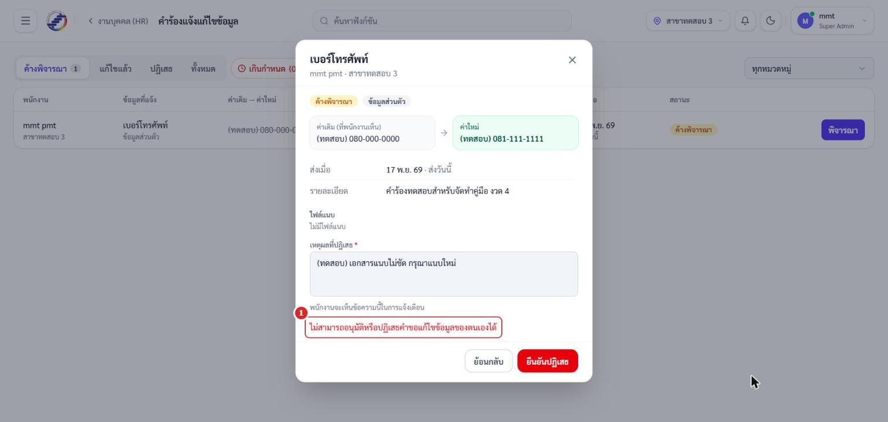
- 1ระบบแจ้งว่า "ไม่สามารถอนุมัติหรือปฏิเสธคำขอแก้ไขข้อมูลของตนเองได้" — ต้องให้ผู้อื่นที่มีสิทธิ์เป็นผู้พิจารณา
รายละเอียดคำร้องที่พิจารณาแล้ว (อ่านอย่างเดียว)
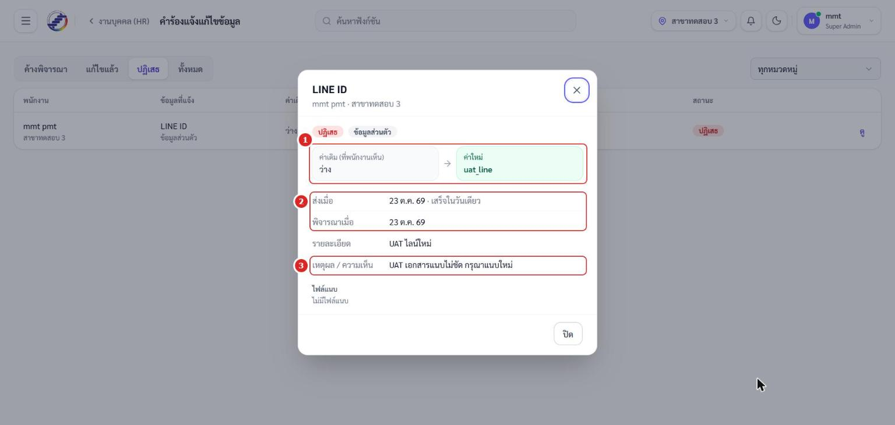
- 1ค่าเดิม → ค่าใหม่
- 2วันที่ส่ง / วันที่พิจารณา (เช่น เสร็จในวันเดียว)
- 3เหตุผล / ความเห็น ของผู้พิจารณา
การแยกผู้ยื่นกับผู้พิจารณาออกจากกันช่วยให้การแก้ไขข้อมูลบุคคลตรวจสอบย้อนหลังได้
ระบบรายงานปัญหาและการแก้ไขข้อมูลอ้างอิง TOR ข้อ 3.6
7
สถิติคำร้อง
ผู้ใช้: ฝ่ายบุคคล · ผู้ดูแลระบบ
เมนู: ภาพรวมงานบุคคล → ระบบ → สถิติคำร้อง
- 1เลือกปีและเดือน — นับตามวันที่ส่งคำร้อง
- 2การ์ดสรุป — คำร้องทั้งหมด (แยกค้าง/แก้ไข/ปฏิเสธ) · พิจารณาทันกำหนด (3 วัน) · ค้างเกินกำหนด · เวลาพิจารณาเฉลี่ย
- 3ข้อมูลที่แจ้งแก้บ่อย — จัดอันดับตามชนิดข้อมูล
- 4ตามสาขา — จำนวนคำร้องของแต่ละสาขา
- 5เมนู สถิติคำร้อง ในกลุ่ม "ระบบ"
- 6เมนู รายงานปัญหา พร้อมตัวเลขค้าง
ใช้ติดตามคุณภาพข้อมูลบุคลากรและความรวดเร็วในการพิจารณา
หมายเหตุการใช้งานและข้อมูลที่ใช้ถ่ายภาพ
- ภาพประกอบทั้งหมดถ่ายจากระบบทดสอบ (staging) ด้วยบัญชีผู้ดูแลระบบ และข้อมูลทดสอบ ไม่ใช่ข้อมูลจริงของสหกรณ์
- สิทธิ์ของแต่ละบทบาทเป็นไปตามตาราง "สิทธิ์ตามบทบาท" ในระบบ (เมนู สิทธิ์ตามบทบาท — ผู้ดูแลระบบเปิดดูได้) ผู้ใช้ที่ไม่มีสิทธิ์จะไม่เห็นเมนูหรือปุ่มนั้น
- ชื่อผู้แจ้งเรื่องวินัยเป็นความลับ: ผู้ถูกแจ้งและฝ่ายบุคคลไม่เห็นชื่อผู้แจ้ง
- ข้อความเกี่ยวกับการหักค่าจ้างจากการพักงานใช้คำว่า "งดจ่าย" ตามที่ TOR กำหนด
- ภาพที่เป็นหน้าต่างยืนยัน (ลงโทษ / บันทึกผลประกอบการ / ส่งเรื่อง) ถ่ายเพื่อแสดงขั้นตอนโดยไม่กดบันทึก เพื่อไม่ให้ข้อมูลทดสอบเปลี่ยน
- หากพบข้อมูลไม่ถูกต้องในระบบ ให้ใช้ปุ่ม "แจ้งแก้ไขข้อมูล" ในหน้า ข้อมูลส่วนตัว